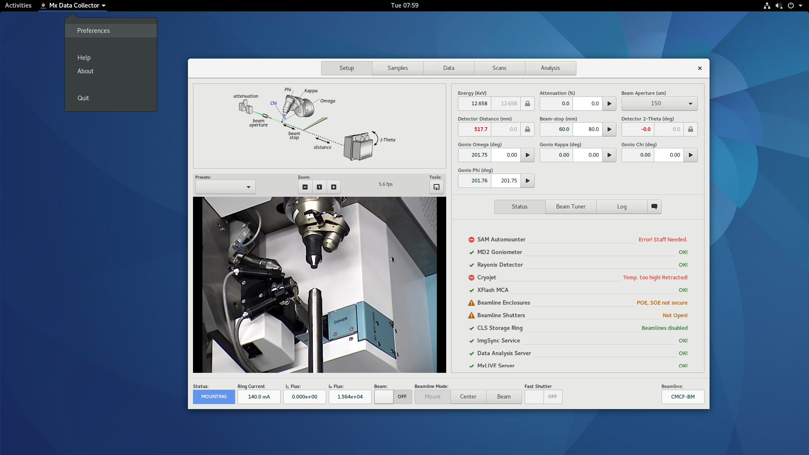
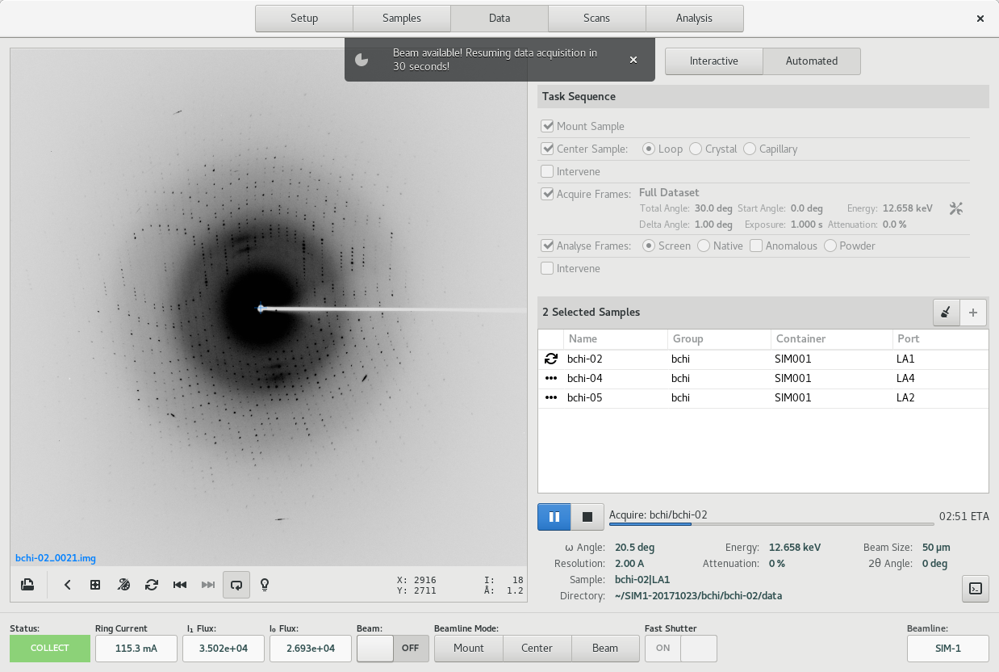
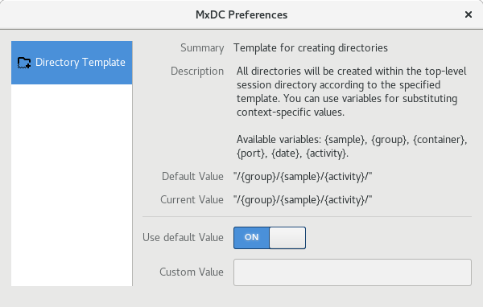
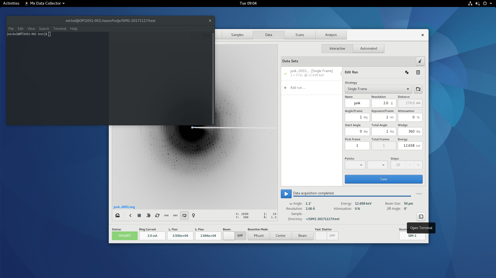

MxDC 2017.10 Release Notes¶
Welcome to the New MxDC¶
While you were away, MxDC grew up! Here is a summary of what is new.
Revamped Interface¶
For this version of MxDC, we went back and re-evaluated the layout and position of every widget on the GUI, and came up with a more refined layout that makes more sense and allows you to focus on your experiment.
{kind=link}
The tabs in previous versions of MxDC have been replaced by Pages (or Views) which can be switched using the buttons in the title bar. The Pages now named Setup -- previously "Beamline Setup", Samples, Data -- previously "Data Collection", Scans -- previously "Fluorescence Scans", and Analysis -- previously "Processing Results". The "Screening" tab in previous MxDC versions has been removed since the functionality is now available through Automated Data Acquisition in the Data View, and through the Rastering tool of the Sample View.
The status bar is now more powerful and versatile: All the mode change buttons and beam ON/OFF switches have been moved to the status bar, which is now available in every view. The status bar now also displays a spinner when an operation is in progress, together with descriptive text. We also added an applications menu through which you can access preferences and documentation.
As a result of the re-design, duplicated widgets on multiple pages have been removed. There is now just a single Hutch Video Widget, a single Sample Microscope Video widget, and a single Diffraction Image Viewer. This results in less memory usage and better responsiveness overall.
Improved Sample Microscope¶
The Video Widgets were completely re-designed to provide a more space-efficient layout so that most of the are is used for displaying the actual video. The video displays have been made bigger and all the video controls are now in toolbars above and/or below the video display.

Multi-Point and Vector Data Collection¶
It is now possible to save centered positions using the sample microscope widget which can later be used for multi- point data acquisition or Vector data acquisition. For example, with multiple micro-crystals in a loop, you can center each one, save the position each time and then setup multiple runs of data collection, one for each centered point. MxDC will translate the sample to the requested position before acquiring frames for the given run.
A single dataset run can even be set up to translate from one point to another point during a single run acquisition to achieve what is commonly known as Vector Data Acquisition.
Full Automation not restricted to screening¶
{kind=link}
Automated Screening in previous versions of MxDC has been updated to allow for automation of full data acquisition. Most of the dataset parameters available for interactive data acquisition are also now available for automation.
Furthermore, automated data analysis is now started at the end of every interactive data acquisition run, based on the selected strategy. In previous versions, it could only be started manually or through automated screening.
Simplified directory structure management¶
No longer do you have to worry about creating directories for data acquisition. MxDC will now do this for you automatically. Simply tell MxDC how you want your data to be organized, by configuring a Directory Template through the preferences and MxDC will do the rest.
Use the Directory Terminal button to open a terminal for inspecting the data files or running further analysis.
{kind=link}
And much more ...¶
Additional features include, a new chat tool for quick communication between staff and users, support for the new ISARA Automounter, polygon based definition of rastering grids, diffraction screening during humidity control experiments, and many more. Please consult the detailed documentation for more information